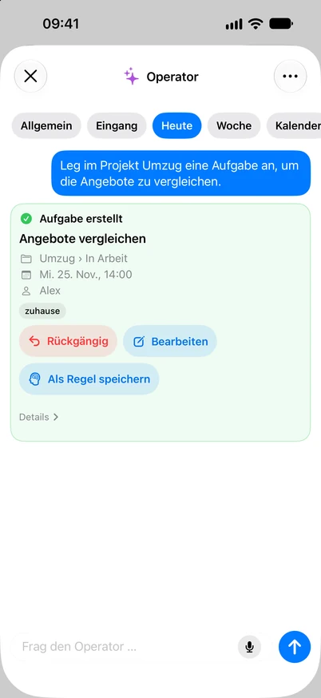

Was soll die KI für dich erledigen?
Diktiere in der Schnelleingabe und prüfe den erkannten Text oder lege die Aufgabe direkt an. Sag dem Assistenten zum Beispiel „Angebote bis Freitag vergleichen, 30 Minuten“. Er kann Frist und Dauer in die Aufgabe übernehmen.
- Aufgaben anlegen, ändern und in Projekte einordnen
- Tages-Briefing und Planungsvorschläge
- Apple Intelligence auf dem Gerät oder über Private Cloud Compute, eigener API-Schlüssel optional
